🔐 技术型隐藏页面 · 验证密钥
这篇文章是关于逆向游戏 ARCAEA 的，所以先来点…
本文所写内容仅供学习交流，作者对于读者所做的任何行为概不负责，如果跟着本文所写内容操作，您需要对自己的行为导致的任何后果负责！
Ok. 总所周知，Arcaea 作为一个在线游戏（虽然只有登陆上传下载还有 LINK 的时候需要用到网络），那么必然存在一个服务器。而且在游戏本体中必然直接硬编码了一个游戏地址，否则游戏的数据就无法对着服务器发送。
在早期版本并没有对这个服务器地址进行什么操作，直接使用明文写在二进制中。但是在3.6.0左右进行了一次比较大的改动，对地址进行了加密。在4.5.0左右版本又对加密算法进行了一些小更新。因此本文主要关于逆向这个加密算法。
之所以逆向这个服务器地址，当然是因为我们想要搭建一个自己的私服。所以在讲述这个过程之前先让我首先对 Lost-MSth大佬表示最深刻的敬意，是他手把手教我如何操作，并且给我很多支持（在这个过程中我犯的傻不计其数）。我的私服程序来源于他发布在 Github 上的 Arcaea-Server。
本文参考了
什么是私服，怎么搭建
这个其实完全不应该由我来说，在 Arcaea-Server 中已经有良好的文档，请一个字一个字阅读。这个仓库的 Wiki 可以说微言大义，错过了任何内容都是损失。
但是我们想讲讲关于私服本身。下面是一张简单的结构图
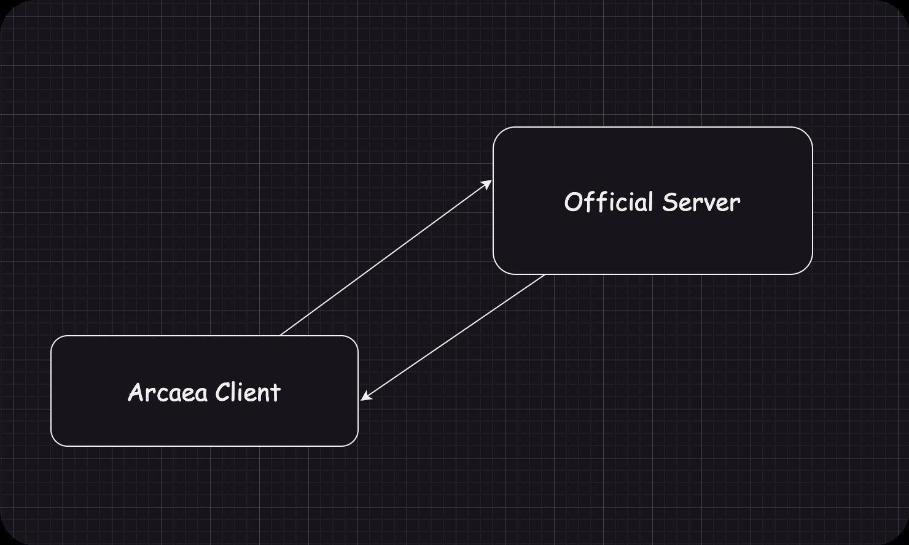
这张图简单的展示了Arcaea的网络结构。客户端通过网络和官方服务器通信。这种通信基于 https,并且 Arcaea 还做了双端证书校验（一般的https服务仅仅校验服务器证书）防止被抓包。中间的技术细节就不展开。我们的目标是搭建一个自己的服务器，而让一个修改后的私服客户端和我们的服务器通信。可以想到的第一种方法是
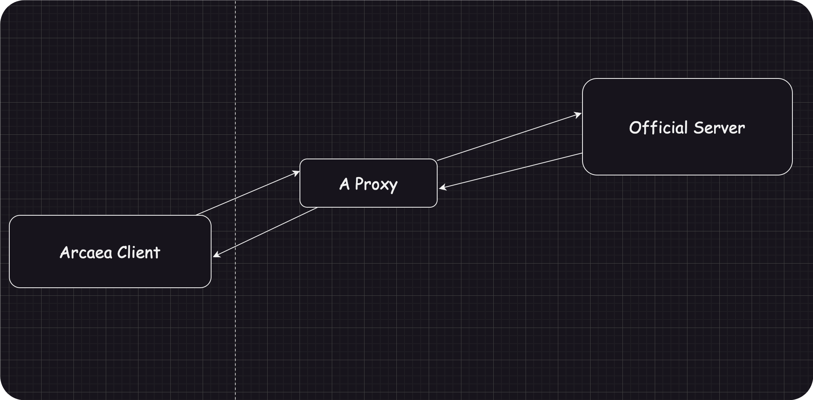
我们首先通过代理服务器来作为中间链接，然后让代理服务器劫持所有指向官方服务器的流量，然后将其转发，或者说重定向到你自己的服务器。
但是这种方法相当于每个人想要玩到你的服务器都需要这样做，不提这样做的实现是否真的可行，这样对于玩家显然一点也不友好。
那有没有什么做法干净又卫生呢？
那我们回到最开始的路径。
我们在开头提到过，既然要访问到官方服务器，那么一定在客户端写死了服务器的地址。那么有没有可能我们可以直接更改客户端来让客户端直接访问我们的服务器呢？
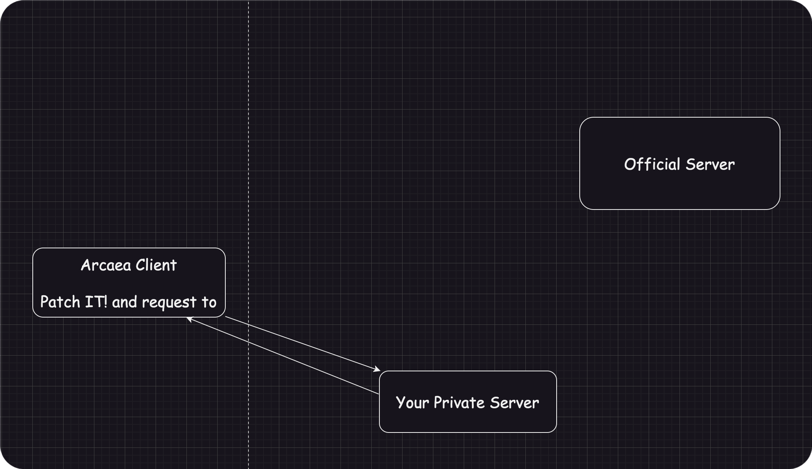
这就是本文的目的了。
关于修改地址
首先我们要先来确定加密的方式和加密的位置。由于更高版本的客户端二进制中加入了更多的混淆，因此我们选一个比较好逆向的客户端。我选取的是4.5.x版本的一个客户端。首先我们通过 apktool 来将其拆开。我们需要更改的是其下的 lib/armeabi-v7a/libcocos2dcpp.so 文件。我们选取32位，它的逆向更简单，而且动态调试也更加简单。不要忘记删除 lib/arm64-v8a/ 文件夹。否则手机会自动使用64位版本的二进制文件。
我的所有思路参考看雪论坛：[原创] 某 iOS 遊戲抓包、修改，当然这篇文章中的地址已经不适用了，因为这篇文章是给4.2.x 使用的，上文提到4.5.x修改了加密密钥。
使用 ida pro 打开这个文件。IDA PRO 是一款优秀的反汇编工具，这里就不赘述了。
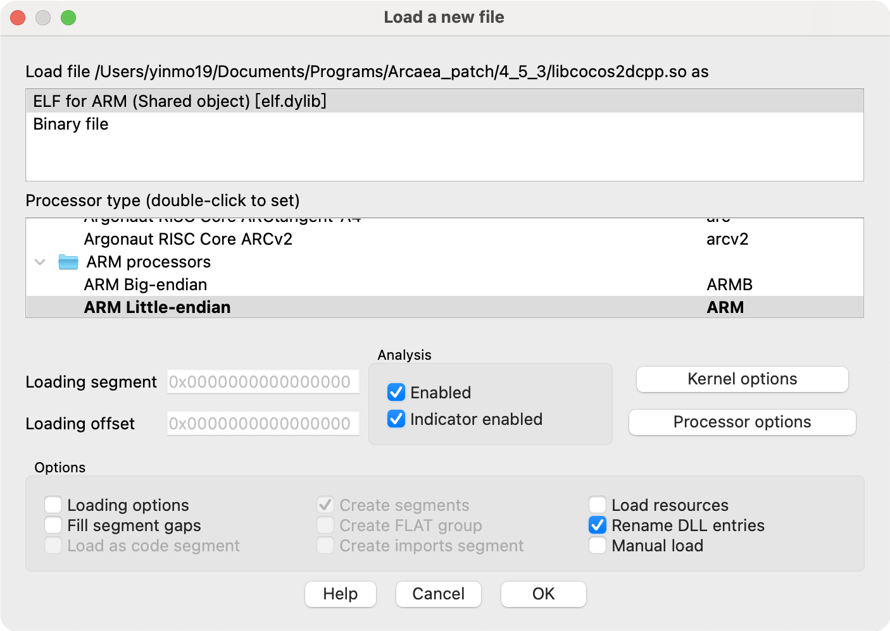
选择默认选项（ida已经帮我们识别它的类型了（linux elf 二进制动态链接库文件），打开之后 ida 会自动解析这个二进制文件，解析速度取决于文件大小，不过我们可以先进行操作，操作的时候解析过程会先停止优先保证我们的操作流畅度。我们可以先搜索字符串（快捷键 shift-F12） auth/login。之所以搜索这个，是因为登陆必须对服务器进行请求，一定会涉及到服务器地址，这毋庸置疑。
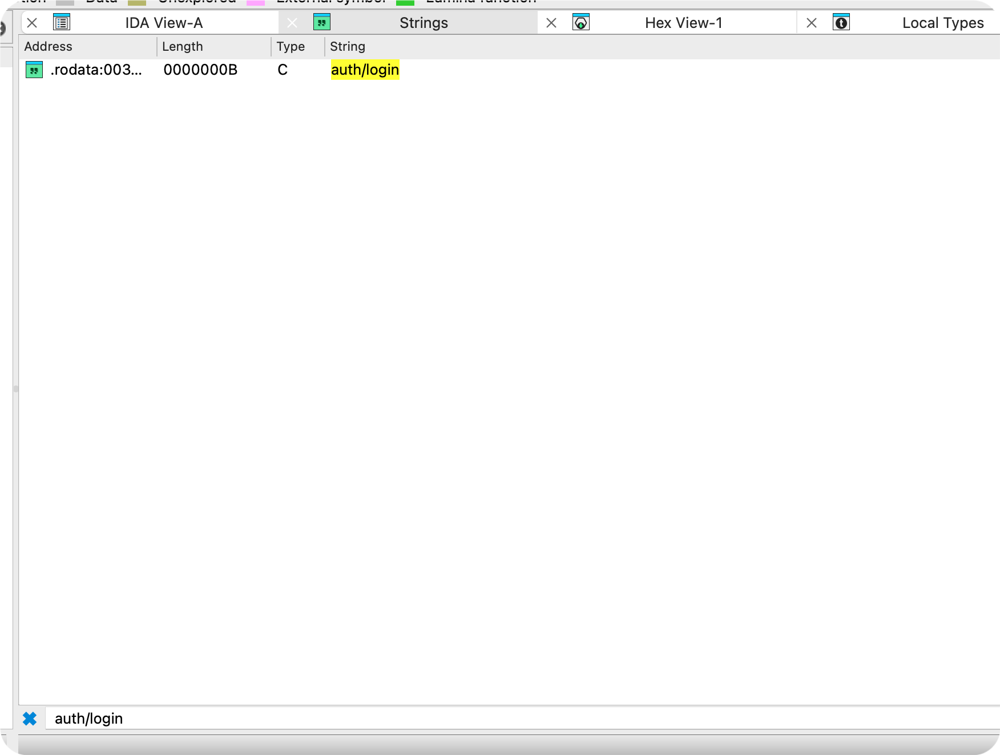
搜索到这个字符串之后我们可以按 X 键查看引用，直接跳转到第一个引用的地方。
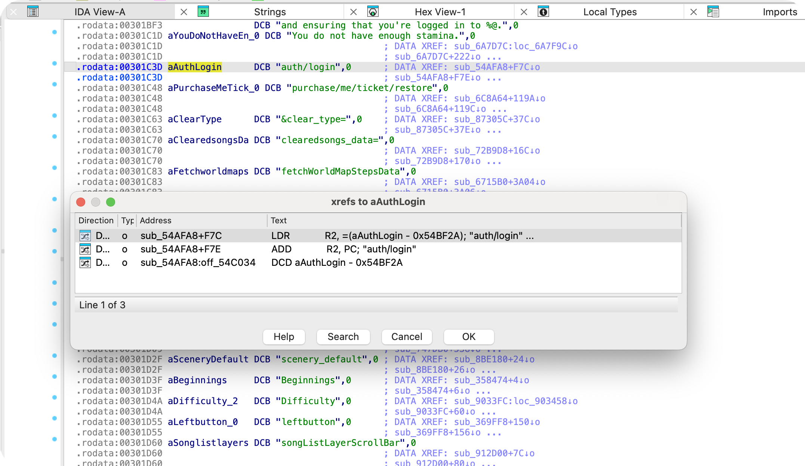
跳转到的地方可能会出现一些框图，这是代码的结构图，主要是程序的结构。可以按空格退回汇编界面。接下来按 F5 可以查看函数的反编译的伪c代码。
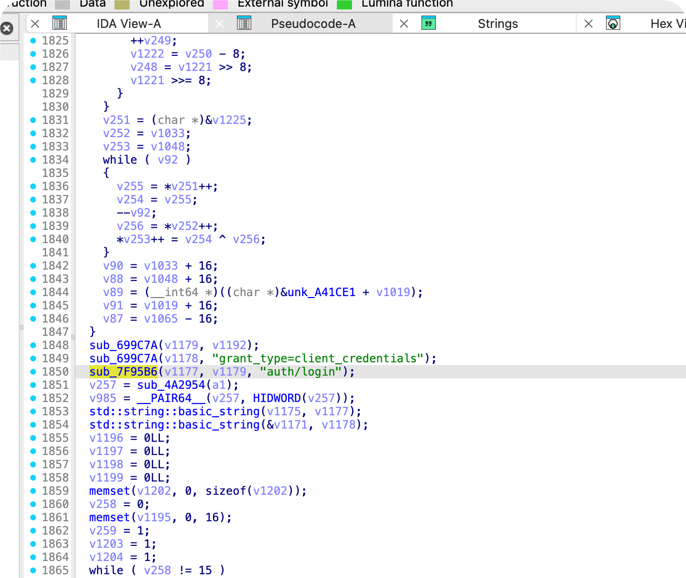
我们可以读代码，并按n对变量名称进行修改。（在编译过程中编译器会对变量名重命名，因此我们变量名信息丢失之后 ida 只能使用 v1v2 这样的变量来表示。如果我们阅读之后可以确定含义我们可以对其重命名来明晰代码）
根据分析我们大概可以确定（其实是根据前人的经验）代码结构如下
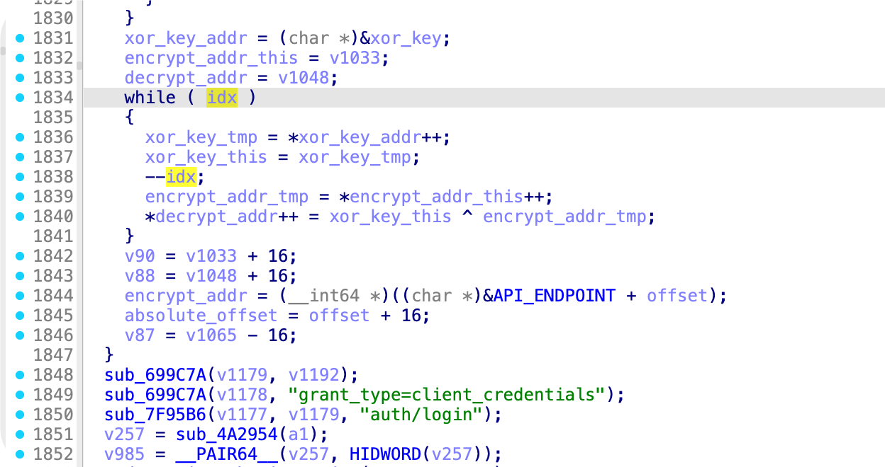
其中 idx 可以查看引用看看赋值位置
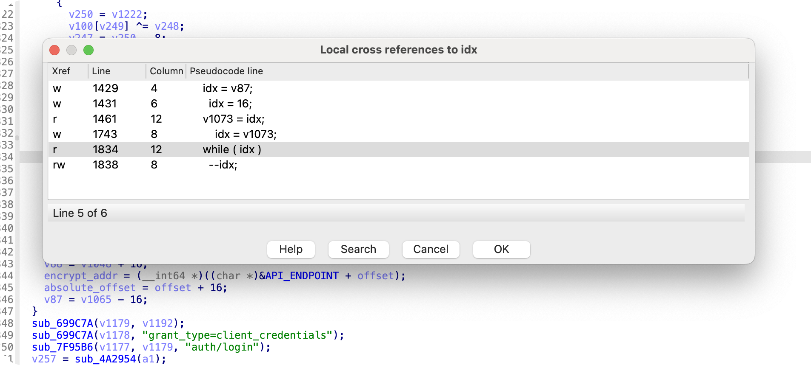
而又有
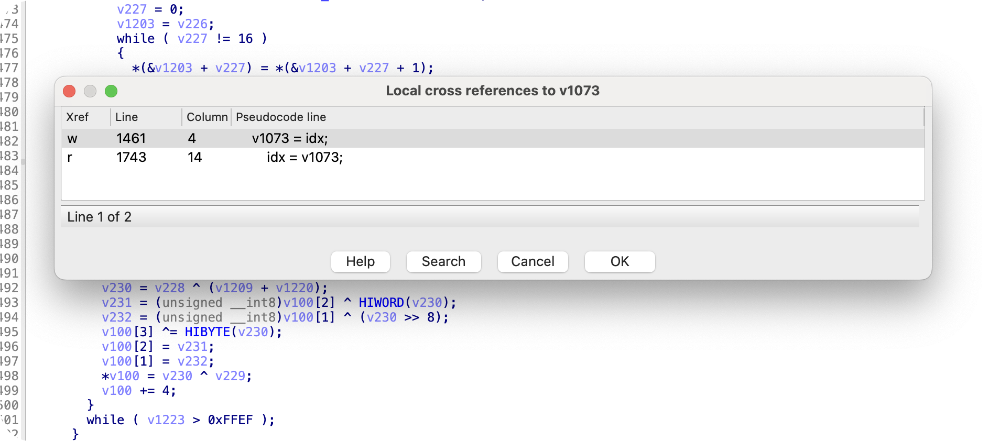
显然 idx 最开始是16，然后大循环之后赋值给v1073，然后v1073没经过任何修改又给idx赋值。在后面的 while 循环中作为递减变量控制循环刚好进行16次。阅读代码，会发现上面有一串非常长的代码，几乎毫无可阅读性。
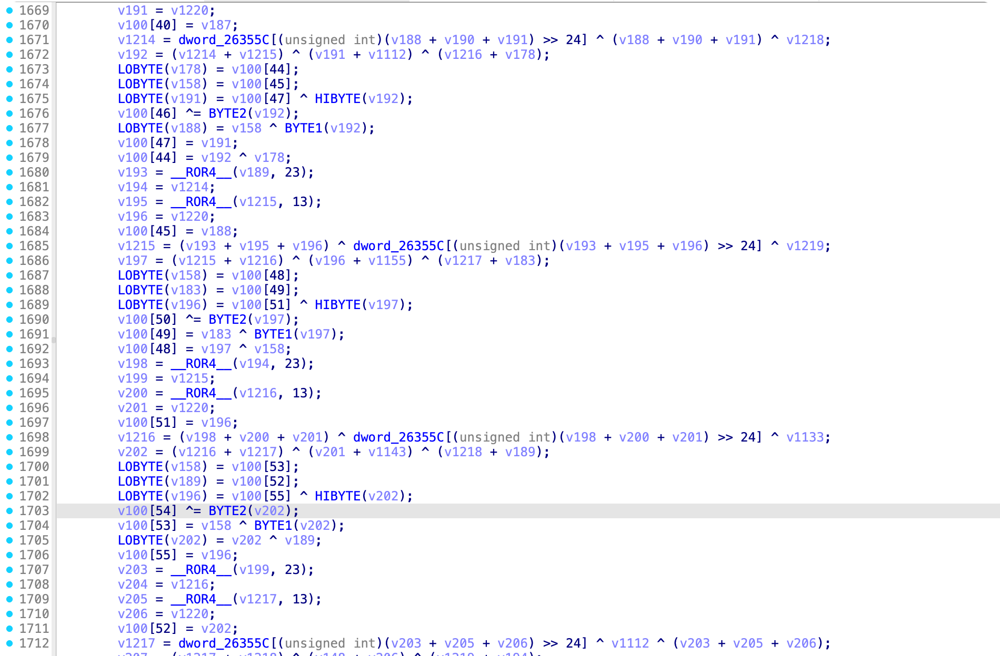
从大佬的文章大概可以知道这是一种 CFB 加密，也就是上一次加密的结果再通过某种算法获得下一次加密的密钥。而根据 idx 我们大概知道一次加密16个字节，根据实际的地址长短
https://arcapi-v3.lowiro.com/<api_endpoint>
是分成三次加密。而不到48字节则在最后补\0x00。因此我们不能拿到算法本身，我们就只能通过动态调试，通过修改内存值，再拿到每一次的XOR KEY来获取结果。
总结一下，大概算法是这样的：
def get_next_xor_key(last_addr: bytes, last_xor_key):
# do something weird
# calculate next xor key
return next_xor_key
for i in range(3):
addr = "aosiaosciaqwu12hoichoaichoaihcoccqwocihqoqwdwqwd"[16 * i : 16 * (i + 1)]
for j in range(16):
next_addr = next_xor_key[j] ^ addr[j]
next_xor_key = get_next_xor_key(next_addr, next_xor_key)
现在我们有 a^b = c, c^b = a^b^b = a ，所以我们可以通过直接通过拿到内存中的 xor_key 和我们想要的地址直接计算出加密之后的地址。而加密的地址和密钥再 XOR 之后即可获取到解密的结果。算法具体请参照看雪论坛：[原创] 某 iOS 遊戲抓包、修改。
动态调试
在现在 root 手机变得相对更加困难，更取决于手机厂商是否让root，而非是自己的技术。但是 Arcaea 并没有关于反 debug 的校验，所以我们只需要通过修改安装包，然后直接通过 run-as 命令来控制 debug 就可以实现无 root 权限调试。
关于这一块的内容请阅读Android 无 ROOT 权限动态调试 (By Lost) 这里补充说明一下，在 ida 9.0 mac版本上的 android_server 无后缀是 64位的，有32后缀的是32位的，和教程中的不一样，需要注意。
我们将更改好的软件传输到手机上安装云云…. (推荐直接使用 adb push xxx.apk /storage/emulated/0/ 应该至少有30-40mb/s 速度) 然后将端口转发设置好，并启动ida的服务器。
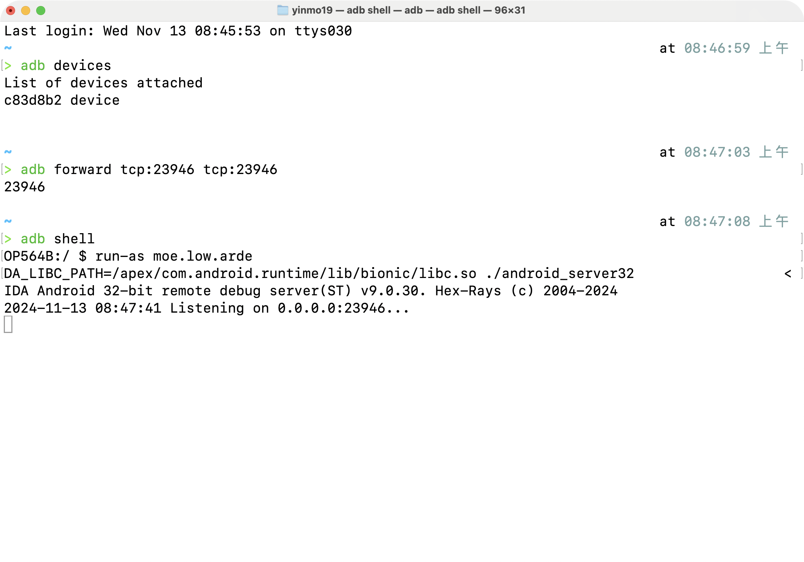
这里我没有演示如何传入服务器文件和chmod改777权限部分，还是请参照 Lost-MSth大佬的blog Android 无 ROOT 权限动态调试 (By Lost)。
现在我们应该在哪里下断点呢？显然是
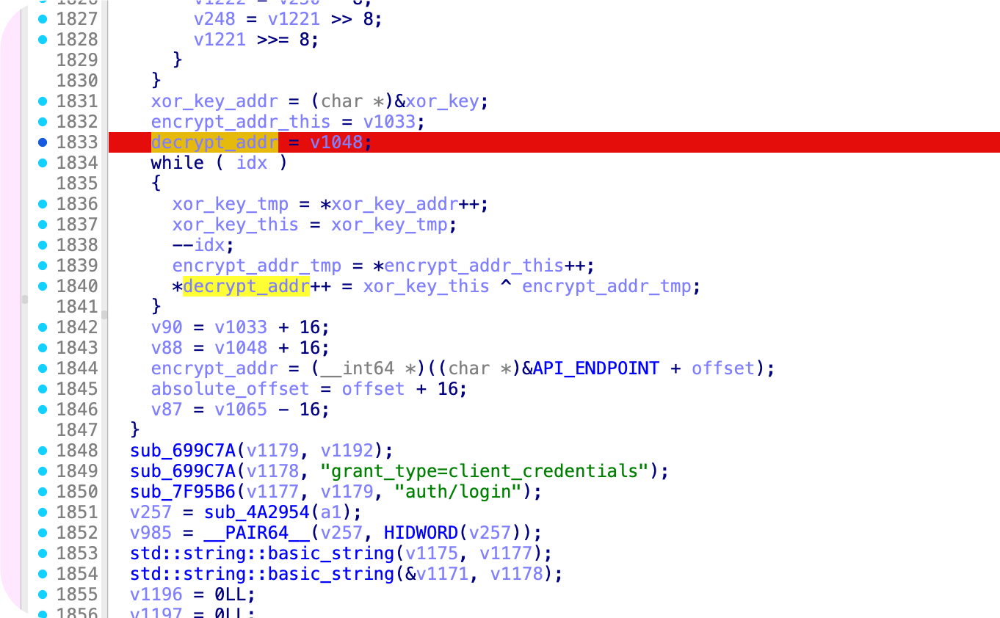
在while循环之前，while循环进行 xor 加密，在此之前刚好拿到上一次加密结束的密钥，我们可以直接对着我们想要的结果和密钥 xor 之后写入对应的内存，然后下一次加密就会使用这个新的地址计算下一次的 xor key。
显然这里第一次计算的xor key是固定的 25 42 38 06 4B 6E 4B 3B 63 85 43 CD E6 DF BB 6F （至少到5.10.6还是）。因此我们写一个小程序用于计算加密结果。
# 你的地址 http(s)://ip:port(domain:port)/<api_endpoint>
api_prefix = "https://test.yinmo19.top/natsugakuru/30/"
if len(api_prefix) < 48:
api_prefix += "\x00" * (48 - len(api_prefix))
b = bytes.fromhex("25 42 38 06 4B 6E 4B 3B 63 85 43 CD E6 DF BB 6F")
prefix = api_prefix[:16]
prefix = bytes.fromhex(prefix.encode().hex())
print(bytes(i ^ j for i, j in zip(prefix, b[:16])).hex(" "))
b = bytes.fromhex("25 42 38 06 4B 6E 4B 3B 63 85 43 CD E6 DF BB 6F") # 获取到第二个 xor_key 之后填入
prefix = api_prefix[16:32]
prefix = bytes.fromhex(prefix.encode().hex())
print(bytes(i ^ j for i, j in zip(prefix, b[:16])).hex(" "))
b = bytes.fromhex("25 42 38 06 4B 6E 4B 3B 63 85 43 CD E6 DF BB 6F") # 获取到第三个 xor_key 之后填入
prefix = api_prefix[32:]
prefix = bytes.fromhex(prefix.encode().hex())
print(bytes(i ^ j for i, j in zip(prefix, b[:16])).hex(" "))
现在进 debugger 设置一下
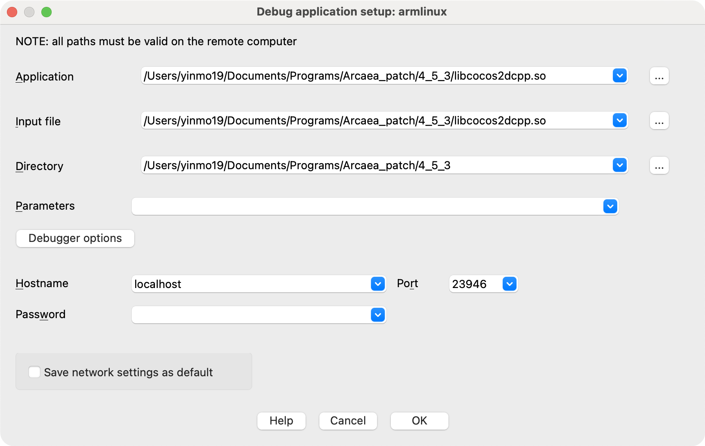
我们就可以选择附加进程 (Attach to Process) ，手机上启动程序，在 ida 中附加进程的可选项应该可以看到一个[32] 包名的选项
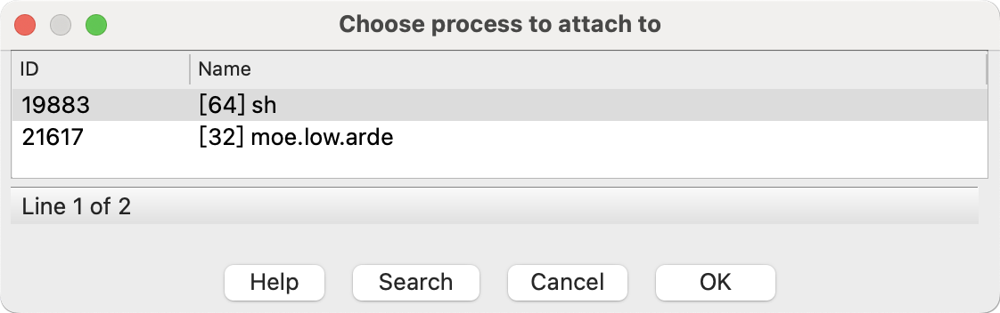
接下来应该会刷入一堆东西，接下来如果需要选择，就选 same。这个问题是问你在电脑上调试的内容和手机软件里面的是否一样，自然一样。然后点击上方的运行按钮，现在卡住的软件应该动起来了。随便在手机上Login输入点东西，然后按一下 Login，这个时候应该会卡住，而ida跳到刚才打的断点的位置。
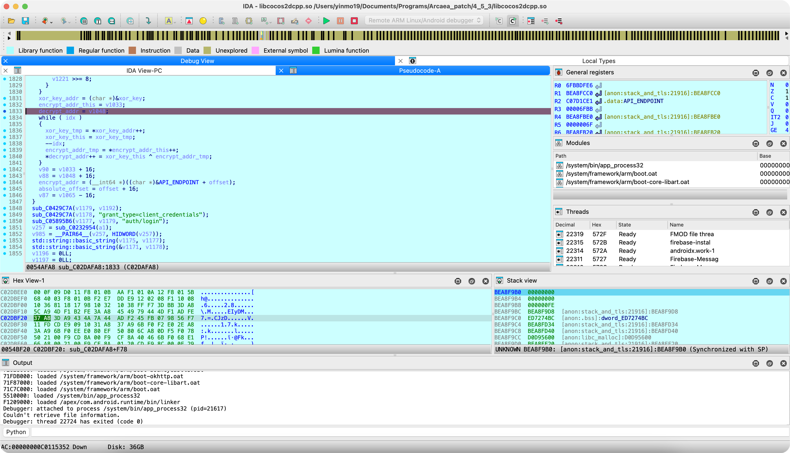
现在我们双击encrypt_addr_this跳转到
看到 4d 36 4c 76...(M6Lv...) 就说明这个确实是地址（这个是地址的开头，对应 http 的加密结果）。右键选择关联到(synchronize with) hex，
这样下面的hex也对应关联到对应位置。我们直接选择菜单栏中的
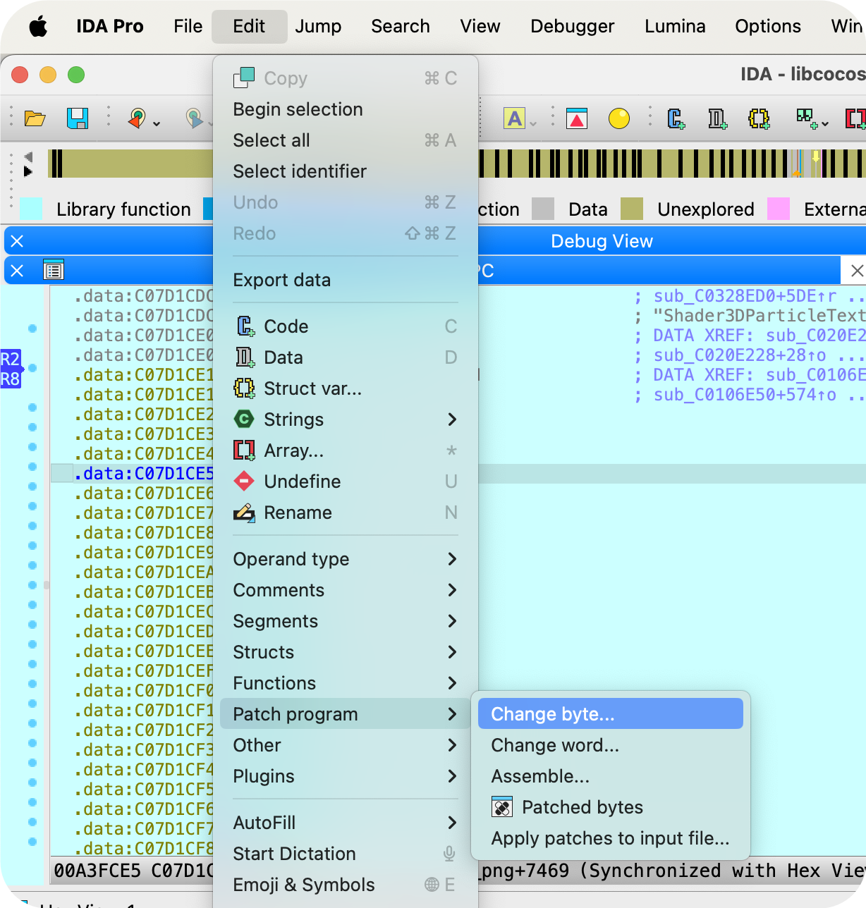
改bytes，刚好一次可以改16个。我们将我们已经知道的第一个16比特直接写入。
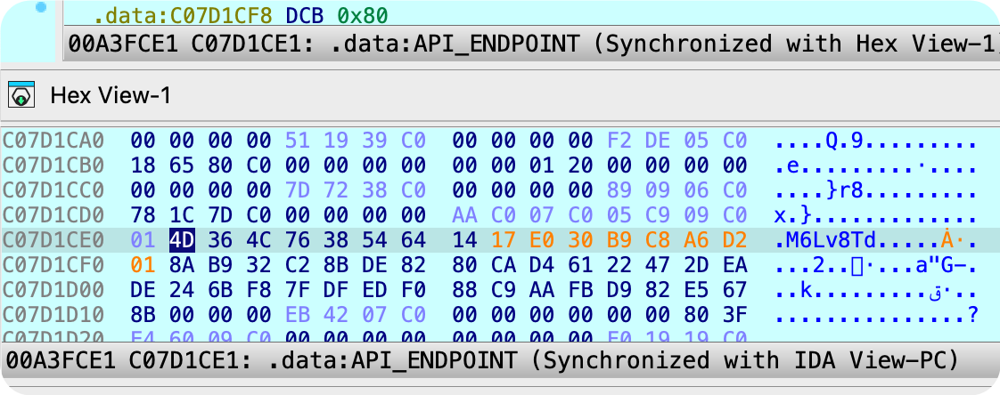
看到橙色的修改即表示修改成功。（可以按一下 xor_key 看看是否和上文说的第一个 xor_key 一致）然后按运行个运行到下一个断点位置（还是同一个位置）。
接下来应该先看xor_key_addr ，双击查看内存地址和值
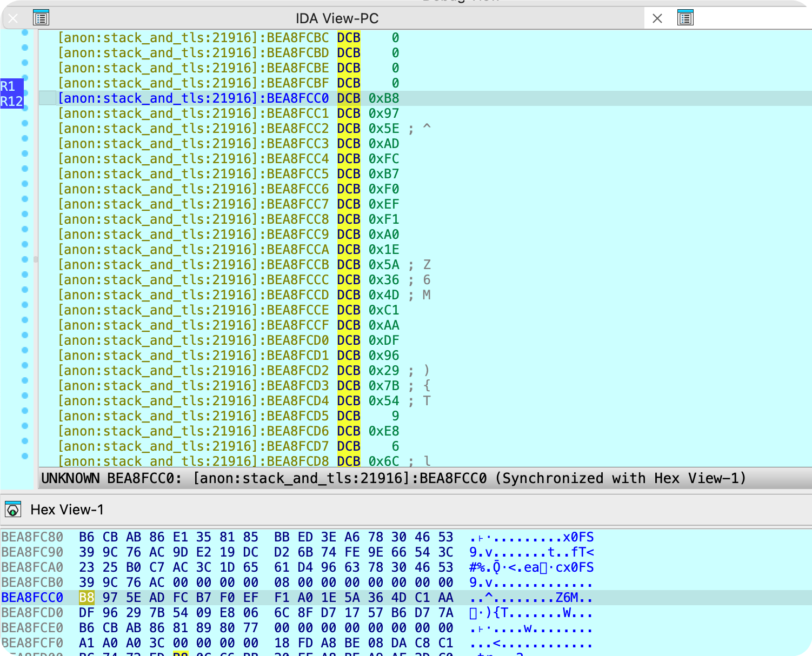
刚好是B8开头的这一行 B8 97 5E AD FC B7 F0 EF F1 A0 1E 5A 36 4D C1 AA 。我们直接将整行复制下来，粘贴到上面的python脚本中的第二个位置，运行可以得到加密地址的中间16字节 d5 f8 6f 94 d2 c3 9f 9f de ce 7f 2e 45 38 a6 cb，和上面操作一致，写入地址。接下来就可以重复第三次操作，拿到最后一次的 xor_key，加密地址。最后将三次获取的内容拼接起来，一共48字节。以后想要开私服只需要替换掉二进制文件中的对应地址就可以了。
这里我提供一个替换小程序，如果有需要可以改改用。
import os
def generate_patched_so(
filename, before: bytes, to_replace: bytes, suffix: str = "arcapi"
):
if not os.path.exists(filename):
print(f"Didn't find {filename}, skipping patch generation")
return
with open(filename, "rb") as f:
data = f.read()
if data.find(to_replace) != -1:
print(f"{filename} looks to be already patched :)")
return
if data.find(before) == -1:
print(f"{filename} doesn't contain the original modulus.")
return
data = data.replace(before, to_replace)
patched_filename = f"{filename}.{suffix}"
with open(patched_filename, "wb") as f:
f.write(data)
print(
f"Generated address patch to {patched_filename}! To apply the patch, replace the original file with the patched file."
)
origin = bytes.fromhex(
"4d364c763854641402f720ac96b696198bb932c28bde8280cad46122473cf0c63c63f8359caab6e6a6d2d4eab1db7d93"
)
replace_addr = bytes.fromhex(
"owoqowoqciwqociowqhoiqicoiqocuwqcoqioucoqcoqwfhiqohfcowqcjwbfuiocqwhfbwusofihqwqwoifhqohwoqhqhfq"
) # 替换成你的内容
generate_patched_so("libcocos2dcpp.so", origin, replace_addr)
如果找到了对应部分则会在本地目录下生成一份补丁文件libcocos2dcpp.so.arcapi，将这个文件直接覆盖原文件即可。
cp libcocos2dcpp.so.arcapi libcocos2dcpp.so
那么就完成了。
后记
这个逆向过程其实并不难，但是确实是我接触逆向以来的一个比较大的步子。记得那天找了一个旧版的apk，真正逆向出来的时候在深夜，当时逆向出来的时候激动的跳起来，现在想起来真有意思……最后感谢前辈们提供的支持，还有 ida pro，这真的是个好软件。
文章作者： YinMo19
文章链接： https://blog.yinmo19.top/2024/11/13/Arcaea-API-%E5%9C%B0%E5%9D%80%E9%80%86%E5%90%91/
版权声明：除另有声明外，本博客文章均采用 CC BY-NC-SA 4.0 许可协议。转载请注明原作者与文章出处。